TopoSurfel：连接高斯曲面元与网格的闭环表面重建TopoSurfel: Closing the Loop between Gaussian Surfels and Meshes for Surface Reconstruction
直接聚焦 3D Gaussian Splatting 到连续表面/网格的几何重建，并公开代码；与三维重建主线高度相关。
一句话工作总结
面向 3DGS 表面重建的网格—曲面元闭环优化，重点解决纹理缺失、遮挡区域的结构歧义和大场景初始化问题。对三维重建与可渲染网格输出最直接相关。
摘要
3D Gaussian Splatting 虽擅长新视角合成，但因离散且无结构，直接提取高保真表面容易产生伪影和漂浮点。TopoSurfel 通过不可训练的可微等值面提取动态生成连续代理网格，并以网格引导曲面元演化，结合法线对齐、几何感知密度控制和空间感知混合重初始化来抑制漂浮点、填补孔洞，提升复杂大场景重建稳定性。
3D Gaussian Splatting has achieved remarkable success in novel view synthesis. However, extracting high-fidelity surfaces directly from 3DGS remains challenging due to its discrete and unstructured nature. Existing 3DGS-based reconstruction methods typically rely on multi-view geometric consistency or local constraints. Without an explicit structured geometric prior during optimization, these methods often struggle to resolve structural ambiguities, leading to artifacts and floaters, particularly in textureless or occluded regions. To address this limitation, we propose TopoSurfel, a novel framework that closes the loop between Gaussian surfels and continuous meshes. Unlike recent methods that incorporate mesh extraction into the differentiable pipeline by introducing auxiliary neural networks or extra per-Gaussian parameters, we dynamically extract a continuous proxy mesh via a non-trainable differentiable iso-surfacing process. Leveraging this differentiable connection, we introduce a mesh-guided surfel evolution strategy, including normal alignment and geometry-aware density control, to effectively suppress floaters and fill surface holes. Furthermore, to address the initialization challenges in large-scale environments, we propose a spatially aware hybrid re-initialization strategy that ensures robust reconstruction across complex scenes. Extensive experiments demonstrate that TopoSurfel achieves competitive geometric reconstruction accuracy while maintaining high-quality mesh-based novel view synthesis. The code for our method is available at https://github.com/Fan-Treasure/TopoSurfel.
中文解读摘录
- 中文名：TopoSurfel：连接高斯曲面元与网格的闭环表面重建
- 方向：3DGS、表面重建、网格、可微几何；代码链接见论文页。
- 要点：以不可训练的可微等值面提取构造连续代理网格，再用网格引导曲面元演化，结合法线对齐和几何感知密度控制抑制漂浮点、填补孔洞，并以空间感知混合重初始化增强大场景稳定性。
- 判断：今日与三维重建主线最直接相关，值得优先阅读其网格提取、优化稳定性和复杂场景实验。
图表/页面预览

{kind=link}
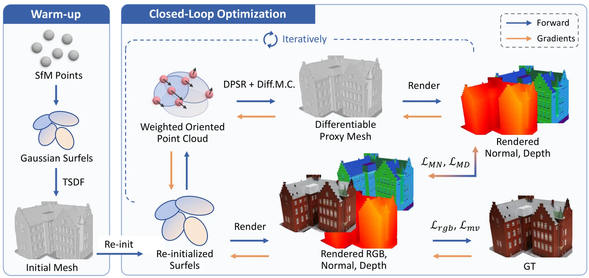
{kind=link}
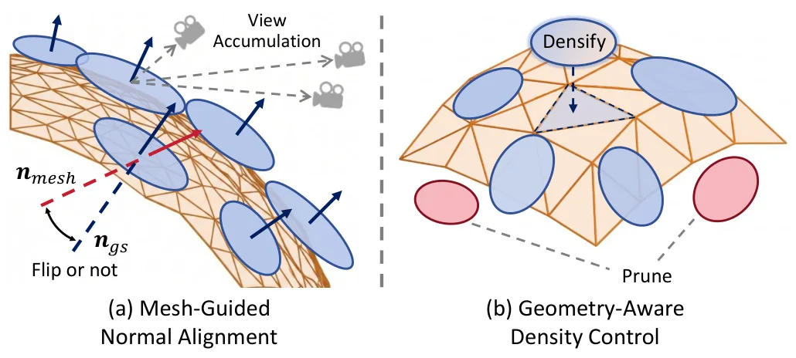
{kind=link}
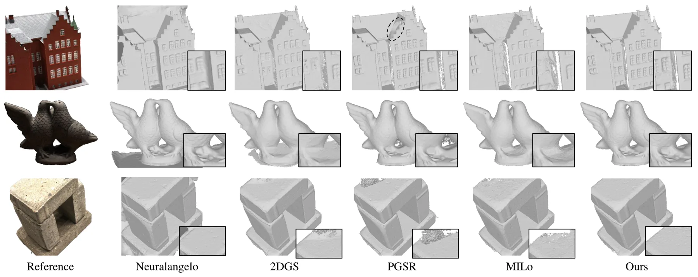
{kind=link}
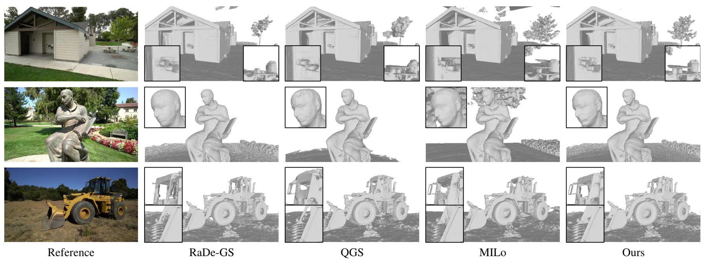
{kind=link}
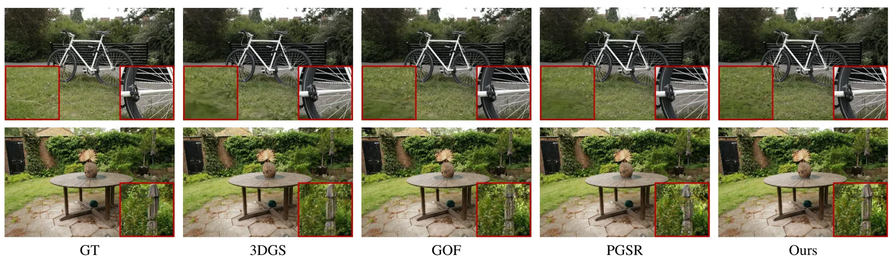
{kind=link}
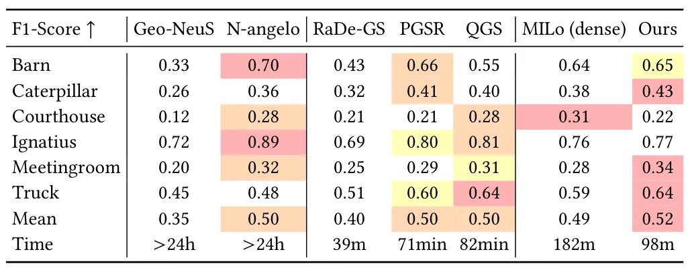
{kind=link}
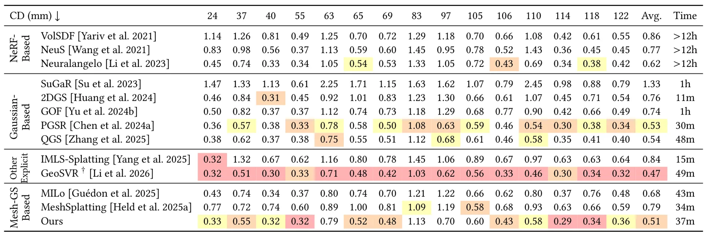
{kind=link}
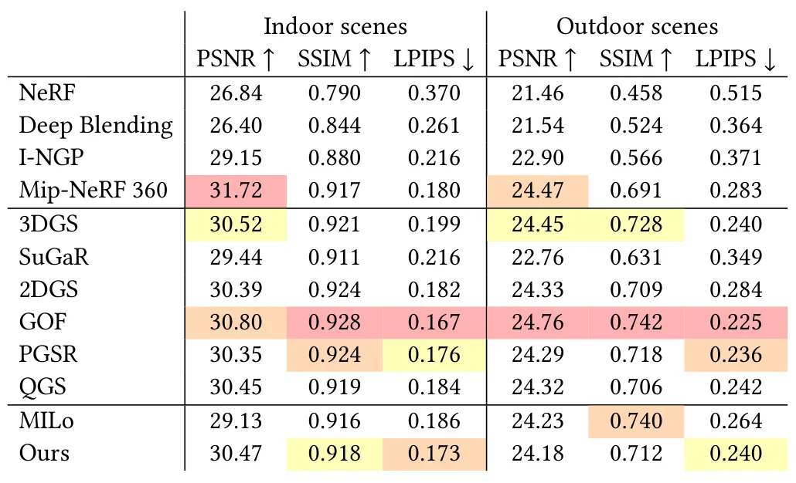
{kind=link}
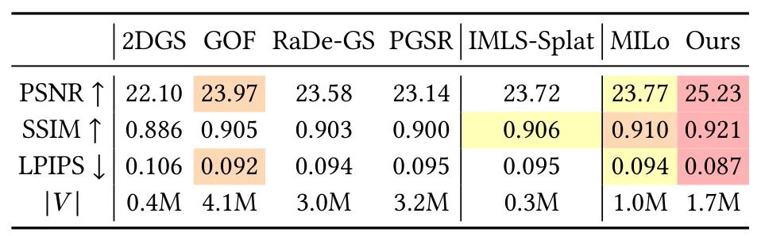
{kind=link}
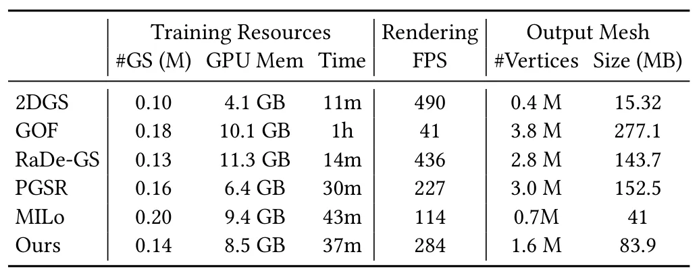
{kind=link}
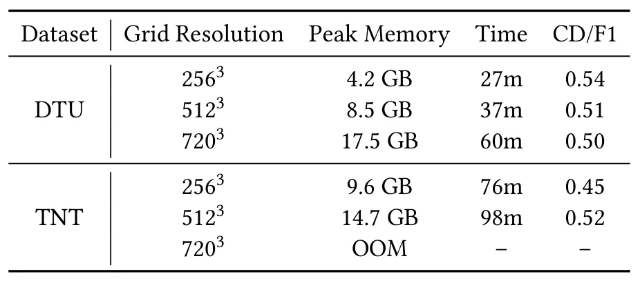